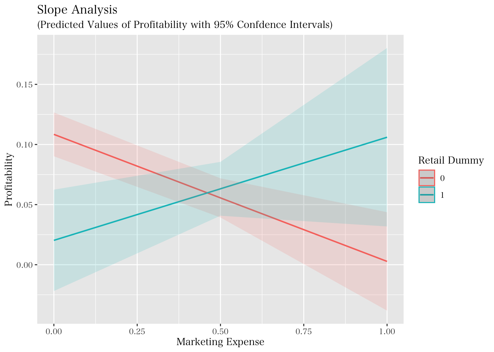
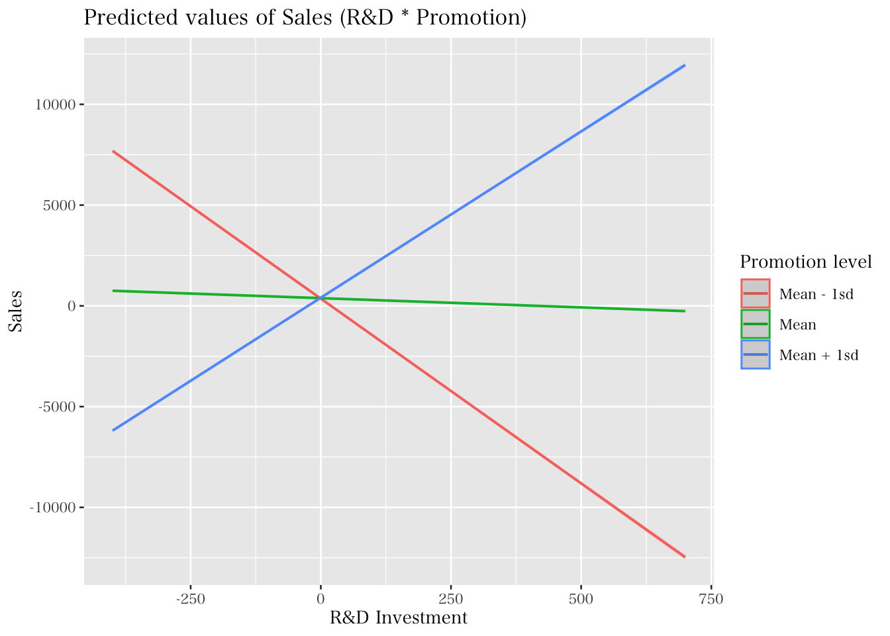

9.2 交差項
マーケティングに関する研究では、ある説明変数の被説明変数に与える影響が、別の説明変数に影響を受ける形で変化することを捉えることも多い。このような変数間の関係に影響するような効果を調整効果（moderating effect）もしくは相互作用効果（interaction effect）と言い、以下のような図で示されることが多い。

上の図では、メインの説明変数と調整変数が存在するかのように見えるが、分析に置いてはどちらか一方をメインと扱うことはなく、XとZをかけ合わせた交差項を含めたモデルを分析する。なお、調整効果もしくは相互作用効果の分析ではダミー変数もしくは量的変数のどちらも用いることができる。

回帰モデルにおける交差項の利用には、以下の点に注意が必要である。
- 交差項には、条件付き効果に関する作業仮説を論じる必要がある。
- 例、XがYに与える影響は、Zの値に応じて変化する。
- 交差項を含むモデルには交差項を構成する二つの変数も含める。
- 推定モデル上、どちらか一方がメインかのような特定化は行わない。
- 交差項を構成する二つの変数の係数を従来の回帰分析結果と同じように解釈してはいけない。
- 説明変数独立項の係数の意味について注意が必要。
9.2.1 傾きダミー
先述の注意点について、具体例を見ながら確認していく。まず、量的変数とダミー変数の交差項について考える。ダミー変数と量的変数の交差項を作ることによって、傾きがグループによって変わるか否かを捉えることができる。交差項を含む回帰モデルは以下のように示される。
\[ y_i = \beta_0 + \beta_1 x_i+\beta_2D_i+\beta_3(x_i\times D_i)+u_i \]
\(\small x_i\) が \(\small y_i\) に与える影響を \(\small \Delta y_i/\Delta x_i\) とすると、それぞれ以下のように示される。
\[ \begin{cases} D_i=1\Rightarrow & \frac{\Delta y_i}{\Delta x_i}=\beta_1+\beta_3\\ D_i=0\Rightarrow & \frac{\Delta y_i}{\Delta x_i}=\beta_1 \end{cases} \] つまり、\(\small x\) が \(\small y\) に与える影響（傾き）が、\(\small \beta_3\) の分だけ、ダミー変数のカテゴリーによって変化することが伺える。\(\small \beta_1\) は \(\small D=0\) の際の x の効果であり、 \(\small D=1\) の際の効果は、\(\small \beta_1+\beta_3\) で表される。 そのため、このようなダミー変数の使い方を「傾きダミー（Slope dummy）」と呼ぶことも多い。
先程の firmdara19 にこの分析モデルを適応してみる。Rにおける交差項の導入は、lm(y ~ x * d) のように指定すれば、xとdの交差項とそれぞれの独立項を自動でモデルに含めてくれる。
##
## Call:
## lm(formula = op ~ mkexp * retail, data = firmdata19)
##
## Residuals:
## Min 1Q Median 3Q Max
## -0.096735 -0.028600 -0.005523 0.018005 0.258568
##
## Coefficients:
## Estimate Std. Error t value Pr(>|t|)
## (Intercept) 0.108430 0.009217 11.764 < 2e-16 ***
## mkexp -0.105662 0.027505 -3.842 0.000183 ***
## retail -0.088147 0.023231 -3.794 0.000218 ***
## mkexp:retail 0.191432 0.063025 3.037 0.002837 **
## ---
## Signif. codes: 0 '***' 0.001 '**' 0.01 '*' 0.05 '.' 0.1 ' ' 1
##
## Residual standard error: 0.05305 on 143 degrees of freedom
## Multiple R-squared: 0.1585, Adjusted R-squared: 0.1409
## F-statistic: 8.979 on 3 and 143 DF, p-value: 1.73e-05分析の結果、マーケティング支出と小売ダミーは負に有意である一方で、両変数の交差項（`mkexp:retail）は正に有意であることが示された。このとき、mkexp の単独項は、retail が0のとき、つまりその他グループにおけるマーケティング支出と利益率の関係を示しており、それが負に有意であると理解できる。そして、mkexp:retail の項が正に有意であることから、その他グループの傾きと、小売グループの傾きは有意に異なることが伺える。もう少し詳細にこの結果を整理すると、本分析による利益率の予測値 \(\hat{y}\)は以下のように示すことができる。
\[ \hat{y}_i = 0.108430 - 0.105662\text{mkexp}_i - 0.088147\text{retail}_i + 0.191432\text{mkexp}_i * \text{retail}_i \]
\[ \begin{cases} \text{Retail}: &\hat{y}_i = 0.020283 + 0.08577\text{mkexp}_i\\ \text{Others}: &\hat{y}_i = 0.108430 - 0.105662\text{mkexp}_i \end{cases} \]
交差項を用いた分析を実行する場合、分析結果をより詳細に理解するため、結果を図示化することが大切になる。具体的には以下のように、分析結果からカテゴリ別に予測値をそれぞれ計算し、図示化することで、含意を得ることができる。ここでは、sjPlotというパッケージの plot_model() 関数を用いて、分析結果に基づく被説明変数の予測値を図示化する。まず、パッケージをインストールして欲しい。
今回の図示化のために、plot_model() 関数内では、type = "pred" と引数を指定した上で、terms において着目する変数名を特定する。また、この関数では、ggplot2のように、図示化に関する凡例や軸ラベルなどの様々な情報を書き足していくことができる。
library(sjPlot)
pred <- plot_model(fit.d3, type = "pred", terms = c("mkexp","retail"), ci.lvl = .95) +
labs(title = "Slope Analysis",
subtitle = "(Predicted Values of Profitability with 95% Confdence Intervals)",
x = "Marketing Expense", y = "Profitability") +
scale_color_discrete(name = "Retail Dummy")
pred
分析の結果、小売企業においてはマーケティング支出と利益率の関係は右上がりである一方で、その他の企業では右下がりである。回帰分析における交差項の係数がこの傾きの違いを示している。また、実線を比較すると マーケティング支出が 0.5 辺りを境に小売企業の利益率の予測値のほうがその他グループよりも高くなっているように見える12。しかしながら、両直線の95%信頼区間は重なっており、統計的に有意な差があるとは言えない。そのため、マーケティング支出が高いとき、小売企業の利益率（の予測値）のほうが有意に高いとは言えない。
9.2.2 量的変数同士の交差項
交差項を用いた分析は量的変数同士にも応用できる。しかしながら、交差項を用いた分析結果の解釈には注意が必要であり、分析の実行においても工夫が求められる。量的変数同士の交差項モデルとして、以下の回帰式を考える。
\[ y_i = \beta_0 + \beta_1 x_i+\beta_2z_i+\beta_3(x_i\times z_i)+u_i \]
上記における x と z はどちらも量的変数であり、x が y に与えるパーシャル効果は、以下のように表すことができる。
\[ \frac{\Delta y_i}{\Delta x_i}=\beta_1+\beta_3z_i \] 同様に、z が y に与えるパーシャル効果は、
\[ \frac{\Delta y_i}{\Delta z_i}=\beta_2+\beta_3x_i \] となる。したがって、x と z が y に与える影響は、互いに依存しあっていることがわかる。上式の \(\small \beta_3\) は調整効果や相互作用効果と呼ばれる。
交差項を用いた回帰モデルでは、説明変数の独立項に関する解釈に注意が必要となる。例えば上式の \(\small \beta_1\)（\(\small \beta_2\)）はどのような条件で x（z）が y に与える影響だと解釈できるだろうか。例えば、上記のモデルにおける y が体重、 x と z がそれぞれ筋肉量と身長だったとする。このとき、筋肉量が体重に与える影響は、 \[ \frac{\Delta y_i}{\Delta x_i}=\beta_1+\beta_3z_i \]
であり、\(\small \beta_1\) は「身長（z）が0」という条件下で筋肉量が体重に与える影響を表している。しかしながら、身長が0のときという非現実的な条件下での結果は、我々にとって解釈が難しく、また情報としても有益でないかもしれない。この問題への対策のひとつが「平均値での中心化（mean-centering）」である。これは、交差項に用いる説明変数に関して、平均からの偏差を用いる方法である。中心化された変数による交差項モデルは以下のように示される。
\[ y_i = \beta_0 + \beta_1 (x_i-\bar{x})+\beta_2(z_i-\bar{z})+\beta_3(x_i-\bar{x})\times (z_i-\bar{z})+u_i \]
これにより、x の効果は以下のように示される。
\[ \frac{\Delta y_i}{\Delta x_i}=\beta_1+\beta_3(z_i-\bar{z}) \]
そのため、中心化されたモデルにおける\(\small \beta_1\) は、\(\small z_i-\bar{z}=0\)、つまり「z が平均値」の際の、x 効果だと解釈できる。また、平均値以外の値を用いた中心化も当然可能であるため、研究・実務上関心の強い値（何らかの閾値など）がある場合には、それを基準とした中心化もできる。
ここで、量的変数を用いた交差項モデルをRで分析する。分析の実行方法は、前節の傾きダミーと同様である。ここでは、“headphone07.csv” という、ある年のヘッドフォン製品の売上を捉えたデータセット（人工架空データ）を用いる。このデータは、以下の変数を含んでいる。
- 売上（百万円）
- プロモーション投資額（百万円）
- R&D投資額（百万円）
このデータセットに対して、本分析ではR&Dによって向上する（と仮定する）製品品質とプロモーションの相互作用が売上に与える影響を分析する。具体的には、たとえ良いものを作っても、きちんとその情報を消費者に伝達しないといけないのではないかという課題を捉える。そのため本分析を通じて、製品品質への投資（R&D投資）が売上に与える影響が、プロモーション量に応じて変化するのではないかという研究課題に答える。まず以下のようにデータを読み込み、データフレームを確認する。
## Rows: 221
## Columns: 4
## $ ID <dbl> 1, 2, 3, 4, 5, 6, 7, 8, 9, 10, 11, 12, 13, 14, 15, 16, 17, 1…
## $ sales <dbl> 118.8377, 548.6312, 197.3075, 104.2657, 748.8251, 947.8850, …
## $ rd <dbl> 404.0893, 252.1270, 444.3374, 407.5876, 841.7605, 336.8744, …
## $ promotion <dbl> 75.63163, 102.74572, 97.98040, 83.46613, 105.69250, 80.17476…このデータに対して、まずは以下の通り中心化していない変数を用いて分析を行う。
##
## Call:
## lm(formula = sales ~ rd * promotion, data = Headphone07)
##
## Residuals:
## Min 1Q Median 3Q Max
## -46.522 -12.861 -0.638 13.578 70.667
##
## Coefficients:
## Estimate Std. Error t value Pr(>|t|)
## (Intercept) 2.033e+04 1.090e+02 186.5 <2e-16 ***
## rd -5.187e+01 2.844e-01 -182.4 <2e-16 ***
## promotion -1.914e+02 1.052e+00 -181.9 <2e-16 ***
## rd:promotion 4.979e-01 2.730e-03 182.4 <2e-16 ***
## ---
## Signif. codes: 0 '***' 0.001 '**' 0.01 '*' 0.05 '.' 0.1 ' ' 1
##
## Residual standard error: 20.55 on 217 degrees of freedom
## Multiple R-squared: 0.9935, Adjusted R-squared: 0.9934
## F-statistic: 1.111e+04 on 3 and 217 DF, p-value: < 2.2e-16分析の結果、rdとpromotion の交差項は正に有意だが、どちらの独立項も負に有意であった。また、先述の通りこれらの独立項の係数は、もう一方の変数が0のときのそれぞれの効果を表しており、現実的には解釈が難しい結果になっている。したがって、以下の様に中心化変数を作成し、回帰分析を実行する。
Headphone07 <- Headphone07 %>%
mutate(promotion_c = promotion - mean(promotion, na.rm = TRUE),
rd_c = rd - mean(rd, na.rm = TRUE))
fit_int_c <- lm(sales ~ rd_c*promotion_c , data = Headphone07)
summary(fit_int_c)##
## Call:
## lm(formula = sales ~ rd_c * promotion_c, data = Headphone07)
##
## Residuals:
## Min 1Q Median 3Q Max
## -46.522 -12.861 -0.638 13.578 70.667
##
## Coefficients:
## Estimate Std. Error t value Pr(>|t|)
## (Intercept) 382.27812 1.51459 252.40 <2e-16 ***
## rd_c -0.91767 0.01196 -76.75 <2e-16 ***
## promotion_c 0.69039 0.03972 17.38 <2e-16 ***
## rd_c:promotion_c 0.49792 0.00273 182.37 <2e-16 ***
## ---
## Signif. codes: 0 '***' 0.001 '**' 0.01 '*' 0.05 '.' 0.1 ' ' 1
##
## Residual standard error: 20.55 on 217 degrees of freedom
## Multiple R-squared: 0.9935, Adjusted R-squared: 0.9934
## F-statistic: 1.111e+04 on 3 and 217 DF, p-value: < 2.2e-16分析の結果、交差項の結果については非中心化モデルと同じであることが伺える。一方で独立項については、rdは負に、promotionは正に有意であることが明らかになった。つまり、プロモーションが平均値である場合、rdにコストを掛けても売上には繋がらない一方で、rdが平均値の場合、プロモーションによって売上が伸びることが伺える。これをまとめると、品質が平均的ならプロモーションで売上は上がるが、プロモーションが平均的で品質投資をしても売上に逆効果となることが伺える。R&D投資による負の効果については価格との関係もあるかもしれない。品質が向上すると通常価格も上がるため、プロモーションがあまり高くない状態においては、価格の向上によって売上を損ねるかもしれない。この点については、価格も含めたさらなる調査、分析が必要になる。
量的変数同士の交差項分析結果の図示化においては、二種類の方法がある。一つ目は調整変数として捉える変数を高水準（例、平均 \(+\) 1標準偏差）と低水準（例、平均 \(-\) 1標準偏差）に二分し、前節の傾きダミーの図示化のようにそれぞれの場合でメイン変数による被説明変数への傾きを描画する方法である。これは、前節で使用したsjPlotパッケージで実行できる。 二つ目は、メインの変数が被説明変数へ与える影響を縦軸に、調整変数の値を横軸に取ることによって、メイン変数が持つ効果が調整変数によって変化する様子を連続的に描画する方法である。これは、marginaleffectsというパッケージを用いる。
まず、一つ目の方法は、以下の通り実行することができる。分析の結果、やはりプロモーション水準が低い場合にはR&D投資が売上に与える影響は負であるものの、プロモーション水準が高い場合には正に転じることが伺える。
leg = c("Mean - 1sd", "Mean", "Mean + 1sd")
int_fig1 <- plot_model(fit_int_c, type = "int", mdrt.values = "meansd", ci.lvl = .9999999999) +
labs(title = "Predicted values of Sales (R&D * Promotion)",
x = "R&D Investment", y = "Sales")+
scale_color_discrete(name = "Promotion level", labels=leg)## Scale for colour is already present.
## Adding another scale for colour, which will replace the existing scale.
続いて、二つ目の方法を実行するために、以下の要領でパッケージをインストールしてほしい。marginaleffects は、margins や emtrends の機能を引き継ぎ、限界効果に関する計算結果を図示化するためのパッケージである13。
R&D が 売上に与える影響（傾き）がどのように変化するかは、plot_slopes() という関数を用いる。以下は、傾きの変化に関する図の出力結果である。
library(marginaleffects)
int_fig2 <- plot_slopes(fit_int_c, variables = "rd_c", condition = "promotion_c", conf_level = .99999999) +
labs(title = "Marginal effects of R&D on Sales",
x = "Promotion", y = "Slope of R&D on Sales") + geom_hline(aes(yintercept=0), linetype = "dashed")
int_fig2
分析の結果、promotionが0（平均）である条件を基準に、R&Dの傾きが正に転じていることが伺える。なお、よく見ると、直線の周りに灰色の影が描画されていることがわかる。これは、99%信頼区間を示している。今回は人工的に作成したデータなので、非常に当てはまりがよく信頼区間がとても狭くなっているが、実際のデータを用いて同様の図示化をすればもう少し明確に信頼区間を視認できる。このように、交差項を利用した回帰モデルを分析する際は、事後的な図示化を行うことを心がけると良い。この作業により実務的・学術的により有益な含意につながることがある。
以下は、plot_slopes() に関するおまけである。図示化の確認のために、firmdata19を使って、マーケティング支出と総資産との交差項により、利益率を説明する回帰モデルを考える。以下では、中心化と回帰分析の実行、図の出力を実施している（回帰分析結果は省略）。
firmdata19 <- firmdata19 %>%
mutate(mkexp_c = mkexp - mean(mkexp),
asset_c = total_assets - mean(total_assets))
fit_int2 <- lm(op ~ mkexp_c * asset_c, data = firmdata19)
int_fig3 <- plot_slopes(fit_int2, variables = "mkexp_c", condition = "asset_c", conf_level = 0.99) + geom_hline(aes(yintercept=0), linetype = "dashed")
int_fig3
図を見ると、Headphoneデータよりもはっきりと信頼区間が視認できる。マーケティング支出の効果は資産によって低下するように見えるが、信頼区間を考慮すると、資産額が平均値（asset_c \(=0\)）付近の値を取るときのみマーケティング支出は負に有意の影響を持つが、それ以外の区間では有意でない（信頼区間に0を含む）ことが伺える。このように、信頼区間の出力は結果の解釈を有意義なものにしてくれる。
試しに、
plot_model内の信頼区間に関する引数をci.lvl = NAとし、実線のみの比較を確認して見て欲しい↩︎本講義では、詳細は割愛するが以下から詳細を確認できる https://vincentarelbundock.github.io/marginaleffects/dev/↩︎